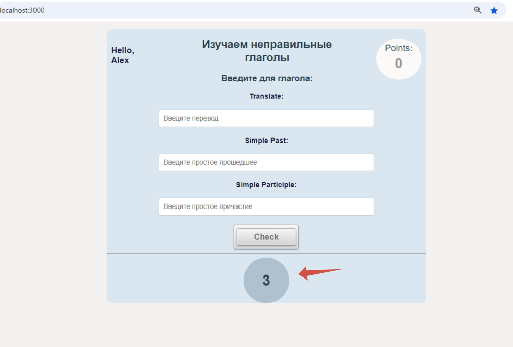
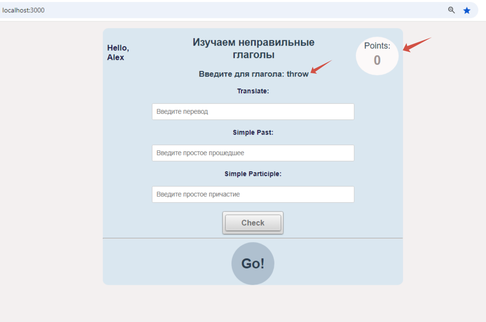
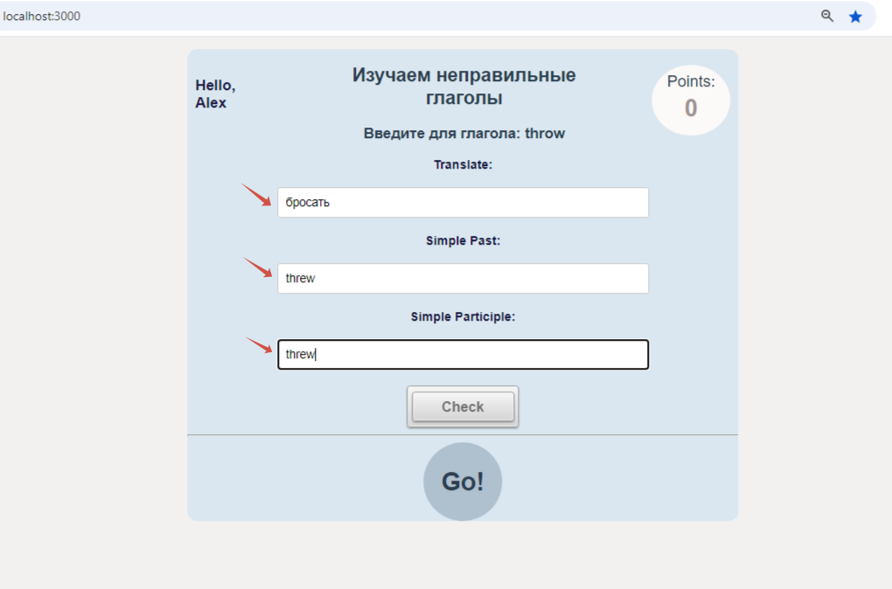
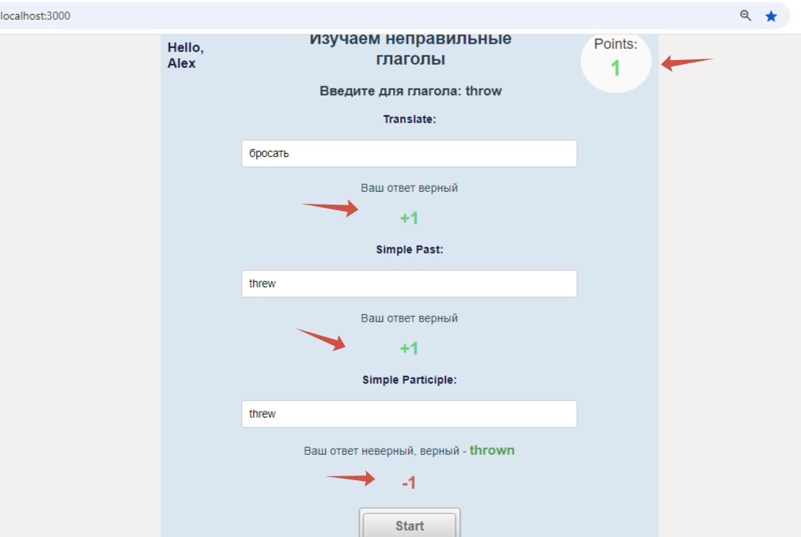

Learn irregular verbs
Загружается приложение. Отсчитывает 3 секунды.
Дается случайный неправильный глагол. В врхнем правом углу количество заработанных очков.
В первое поле вводим его перевод, во второе - простое прошедшее, а в третье - простое причастие. Нажимаем кнопку "Check"
После нажатия кнопки "Check" программа проверяет. Если правильно то +1, а если нет, то -1 и программа пишет, что неверно и дает правильный ответ, в верхнем правом углу отображается общее количество очков. Если число положительное,то зееный цвет, а если отрицательное, то - красный. Потом нажав кнопку "Start" еще слуайный глагол.
Scills:JS, Html, CSS, Vue3, Pinia
 Github repo
Github repo